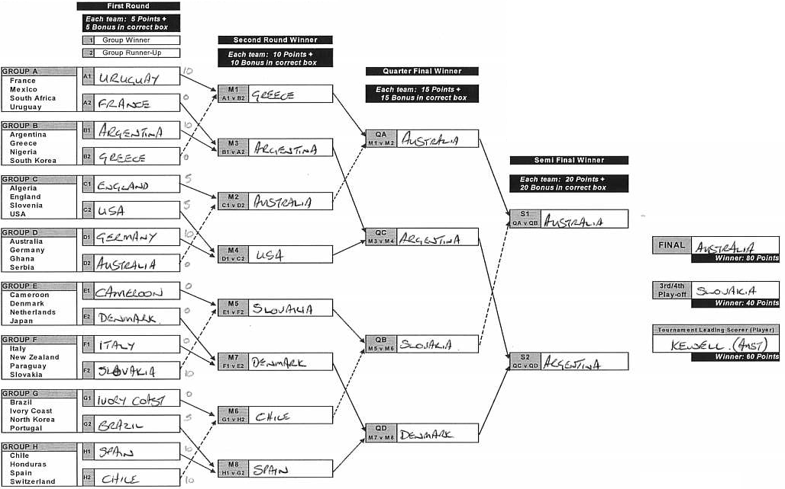

The Project Outline
To create a online version of a World Cup Predictor competition:

The Initial Build
- 2 weeks (in spare time) to build
- Drupal 7
- Minimum viable product:
- Allow users to login and manage their Prediction
- Automate the scoring of predictions
- League table of points
- Basic theming and user interface
Content types
- Team
- With ISO country code to link Teams to players
- Term reference from "Group" vocabulary
- Player
- Imported 736 players via CSV using the Feeds module
- Country code corresponding to their Team.
Prediction content type
-
Rules module used to create a user's Prediction when their account has been manually approved.
- Each team slot was an Entity Reference field, referencing Team nodes
- Fields enabled/disabled using Form API States functionality and points fields hidden from view (both via
hook_form_alter).
- Fields linked together using Javascript so when one was updated, the options for the next in the sequence would be populated.
Theme
- There was little time to implement a full, responsive theme
- The Predictor node itself needed a custom interface to enable the user to clearly see team progression
- This was achieved using Flexslider and some custom Javascript to generate CSS transformations to visually link fields.
Custom Modules
Only 2 custom modules were required:
- A module that added a small bit of extra validation to user registration.
- A module for Predictions which:
- Implemented
hook_form_alter on the Prediction node edit form
- Implemented
hook_field_attach_view_alter to force the rendering of empty fields.
Custom Modules, continued
- Contained helper functions for:
- Which fields were related to, and affected, others
- The structure of the rounds and how many points things were worth, for use with scoring later.
- The PHP script to be executed for scoring predictions - this was executed using
Views Bulk Operations module.
Post go-live functionality
- Mini "leagues" functionality
- Points "as it stands"
- Colour-coding of correct/incorrect predictions
- And of course - bug fixing on the fly!